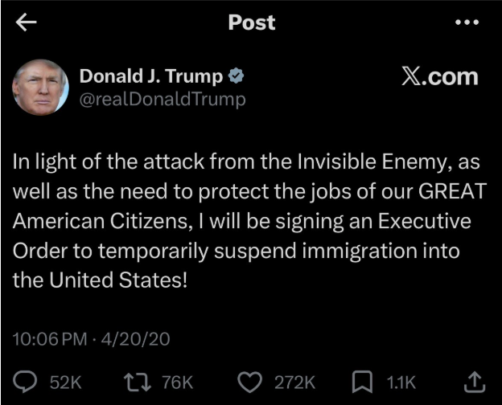
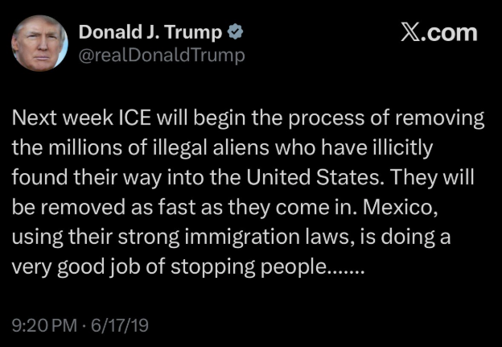
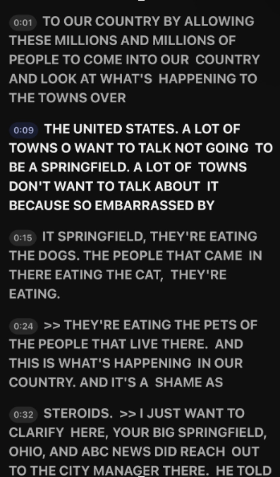
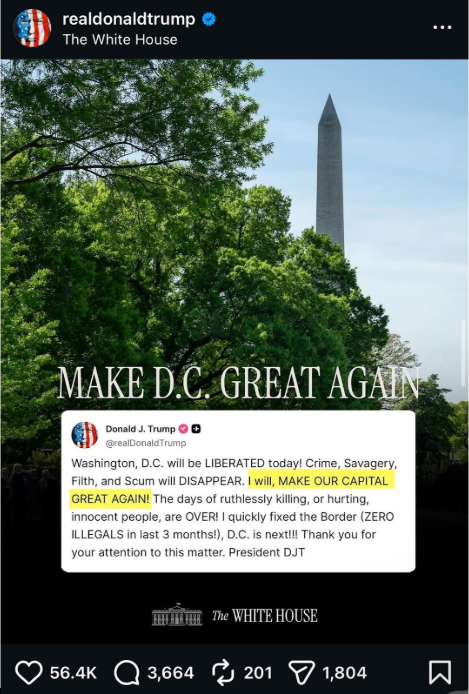
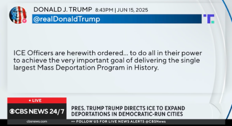

In 2024, following Donald Trump’s election to the presidency, concerns were raised by critics about a rise in xenophobic sentiment and increased targeting of individuals perceived to be immigrants,
particularly people of color who were sometimes assumed to be undocumented based on appearance alone
One policy frequently referenced in this context is Executive Order 14159 titled "Protecting the American People Against Invasion".
Supporters describe it as strengthening immigration enforcement, while critics argue that it contributed to broader and more aggressive enforcement practices, including expanded authority for agencies such as ICE.
This raises the question: what is ICE’s role?
U.S. Immigration and Customs Enforcement (ICE) is responsible for enforcing immigration laws, investigating transnational crime, and preventing the illegal movement of people and goods across borders.
However, under this administration, critics claim that ICE’s enforcement approach has become more forceful in certain areas, particularly in major cities, leading to heightened fear in some communities.
These concerns include reports of more aggressive detention practices and the potential for mistaken or overly broad enforcement actions affecting individuals who are not undocumented.
The following video will explore these developments and their impact on affected communities.
The actions depicted increased concerns about the value placed on human life under current enforcement policies. This leads to an important question: how are Donald Trump and ICE able to justify or continue such aggressive enforcement practices when there is publicly available footage showing the extent of these operations against suspected immigrants?
Critics argue that part of the answer lies in fear-based political messaging. They claim that the administration frames immigration as a national threat, often using charged language that associates immigrants with danger or criminality. Over time, this kind of rhetoric may influence public perception, leading some supporters to broadly associate people of color or those perceived as “foreign” with illegal immigration or security threats.




